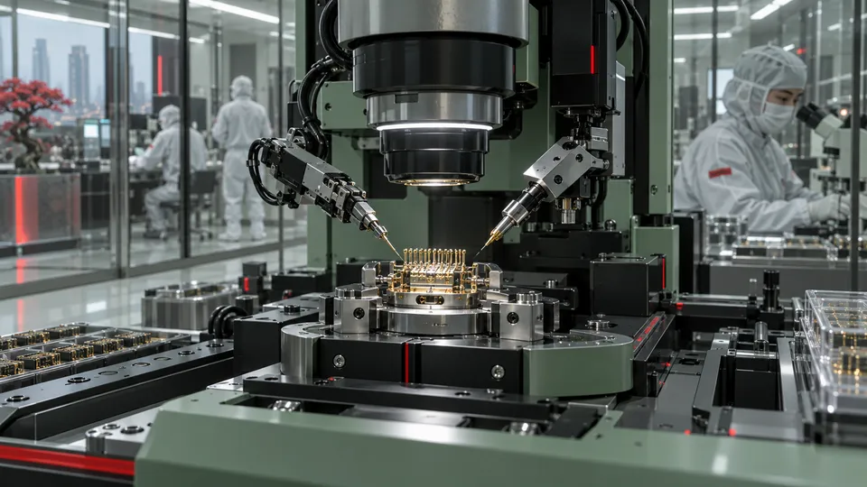

Fundada en Tokio, Japón, a principios del siglo XX por el visionario Sasai Arasaka, nuestra corporación nació con un propósito inquebrantable: proporcionar seguridad, estructura y estabilidad en un mundo destinado al caos.
Lo que comenzó como una empresa manufacturera de alta calidad se transformó, bajo el liderazgo de Saburo Arasaka, en el pilar tecnológico y militar que sostiene el orden internacional.
Con la llegada del siglo XXI, Arasaka expandió sus fronteras hacia las Américas, consolidando a Night City como nuestro nodo estratégico central en el hemisferio occidental.
A través de la imponente Torre Arasaka, no solo redefinimos el panorama urbano de la ciudad, sino que integramos nuestros sistemas de defensa, armamento inteligente y redes de datos en el núcleo mismo de la sociedad actual.
Hoy en día, bajo la dirección de la junta ejecutiva, Arasaka no solo domina el mercado de la seguridad corporativa y el armamento táctico con sistemas revolucionarios como la línea Smart Link.
Hemos desafiado los límites de la condición humana. Con el desarrollo del programa Secure Your Soul (Salva tu Alma) y la tecnología Soulkiller, hemos abierto las puertas hacia la inmortalidad digital, asegurando que el legado de nuestros clientes más valiosos perdure para siempre.
